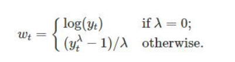

Code
library(tidyverse)Data Exploration or Exploratory Data Analysis (EDA) is an approach to analyzing data in which you investigate and summarize the data’s main characteristics, aiming to understand the underlying patterns and relationships between variables. EDA helps you identify potential data problems, discover outliers, and generate ideas for further analysis.
Here are below basic steps for data exploration in R:
Import data: The first step in data exploration is to import your data into R. You can import data from various sources such as Excel, CSV, or databases.
Check the structure of data: Use the str() function to check the structure of your data. This function will give you information about the dimensions of your data and the types of variables in your data.
check data distribution and visualize the data distribution using histograms, density plot and qqplots. Perform normality test to determine whether a given data sample is derived from a normally distributed population.
Check for missing values: Use the is.na() function to check for missing values in your data. If you have missing values, you can use the na.omit() function to remove the missing values from your data.
box plot to identify outliers, which are observations significantly different from the rest of the data.
Perform statistical tests: Use the t.test() function to perform statistical tests on your data. You can use this function to test whether the means of two groups are significantly different.
Explore and visualize the relationships between two variables using scatter plot and correlation analysis.
Look for patterns and trends: Search for patterns and trends in the data that can help you to generate new hypotheses or insights. You can use clustering and principal component analysis (PCA) techniques in R.
Overall, EDA is an important first step in any data analysis project, as it helps you to understand the data and generate hypotheses that can guide further analysis. R provides many powerful tools for EDA, making it a popular language for data scientists and analysts.
We will some basic R functions to explore soil heavy metal data of the USA (usa_soil_heavy_metal.csv). This data could be found here
library(tidyverse)In this exercise we will use US soil heavy metal datafrom USA-Geological Survey.
# define data folder
dataFolder<-"D:/Dropbox/GitHub/Data/USA/"
# Load data
mf<-read.csv(paste0(dataFolder, "usa_soil_heavy_metal.csv"), header=TRUE)In R, the str() function is a useful tool for examining the structure of an object. It provides a compact and informative description of the object’s internal structure, including its type, length, dimensions, and contents.
str(mf)'data.frame': 4807 obs. of 17 variables:
$ A_LabID : chr "C-318585" "C-318476" "C-318498" "C-318512" ...
$ SiteID : int 3515 3419 3374 3259 3163 3003 2939 2875 2763 2747 ...
$ StateID : chr "NH" "IN" "TX" "TX" ...
$ Latitude : num 43.1 38.2 31.6 31.2 45.9 ...
$ Longitude : num -71.5 -86.3 -94.8 -96.1 -112.4 ...
$ Landcover : chr "Forested" "Forested" "Planted/Cultivated" "Forested" ...
$ Developed : chr "No" "No" "No" "No" ...
$ Agriculture: chr "No" "No" "Yes" "No" ...
$ As : num 103 94.5 84.2 77.3 66.7 63.8 62.8 62.3 59.9 56.1 ...
$ Cd : num 0.05 1.4 0.05 0.2 1 0.5 1.7 0.2 0.7 0.05 ...
$ Cr : num 17 217 95 120 11 15 50 20 34 101 ...
$ Fe : num 1.44 8.28 12.7 13.9 1.69 3.05 2.58 2.9 2.13 7.9 ...
$ Mn : num 516 480 183 1390 1870 1020 612 610 622 406 ...
$ A : num 0.57 5.02 1.96 0.76 1.35 1.18 4.57 2.28 0.87 1.05 ...
$ Pb : num 36.5 259 26.3 40.4 55.3 10.7 19.2 19.9 36.4 21.7 ...
$ Se : num 0.1 1.3 1.9 0.9 0.1 0.1 1.7 0.1 0.1 0.7 ...
$ Zn : num 31 536 73 158 99 133 157 74 104 58 ...In R, the is.na() function is used to test for missing values (NA) in an object. It returns a logical vector indicating which elements of the object are missing.
sum(is.na(mf))[1] 71Dealing with missing values is an important task in data analysis. There are way we can deal with missing values in data. The choice of method depends on the specific dataset and the analysis goals. It’s important to carefully consider each approach’s implications and select the most appropriate method for the data at hand
Here are some common strategies for handling missing data:
Delete the rows or columns with missing data: This is the simplest approach, but it can result in the loss of valuable information if there are many missing values.
Imputation: Imputation involves filling in the missing values with estimated values based on other data points. Standard imputation techniques include mean imputation, median imputation, and regression imputation.
Multiple imputations: This involves creating several imputed datasets and analyzing each separately, then combining the results to obtain a final estimate.
Modeling: This involves building a predictive model that can estimate the missing values based on other variables in the dataset.
Domain-specific knowledge: Sometimes, domain-specific knowledge can help to fill in missing values. For example, if a person’s age is missing but their date of birth is available, their age can be calculated based on the current date.
In this exercise, we only show to remove missing values in data-frame. Later we will show you how to impute these missing values with machine learning.
We can remove missing values from a data frame using the na.omit() function. This function removes any rows that contain missing values (NA values) in any column.
Here’s an example to remove missing values:
df<-na.omit(mf)
sum(is.na(df))[1] 0Descriptive statistics are used to summarize and describe the main features of a dataset. Some common descriptive statistics include measures of central tendency (such as mean, median, and mode), measures of variability (such as variance, standard deviation, and range), and measures of shape (such as skewness and kurtosis).
The summarize() function in R is used to create summary statistics of a data frame or a grouped data frame. This function can be used to calculate a variety of summary statistics, including mean, median, minimum, maximum, standard deviation, and percentiles.
The basic syntax for using the summarize function is as follows:
summary(df) A_LabID SiteID StateID Latitude
Length:4740 Min. : 8 Length:4740 Min. :25.14
Class :character 1st Qu.: 3238 Class :character 1st Qu.:34.98
Mode :character Median : 6558 Mode :character Median :39.23
Mean : 6584 Mean :39.14
3rd Qu.: 9890 3rd Qu.:43.34
Max. :31081 Max. :48.98
Longitude Landcover Developed Agriculture
Min. :-124.40 Length:4740 Length:4740 Length:4740
1st Qu.:-110.29 Class :character Class :character Class :character
Median : -99.48 Mode :character Mode :character Mode :character
Mean : -99.46
3rd Qu.: -89.47
Max. : -67.52
As Cd Cr Fe
Min. : 0.600 Min. : 0.0500 Min. : 0.50 Min. : 0.020
1st Qu.: 3.200 1st Qu.: 0.1000 1st Qu.: 18.00 1st Qu.: 1.320
Median : 5.300 Median : 0.2000 Median : 31.00 Median : 2.000
Mean : 6.213 Mean : 0.2616 Mean : 37.49 Mean : 2.218
3rd Qu.: 7.800 3rd Qu.: 0.3000 3rd Qu.: 42.00 3rd Qu.: 2.760
Max. :103.000 Max. :46.6000 Max. :3850.00 Max. :13.900
Mn A Pb Se
Min. : 2.5 Min. : 0.030 Min. : 1.20 Min. :0.1000
1st Qu.: 297.0 1st Qu.: 0.520 1st Qu.: 13.38 1st Qu.:0.1000
Median : 503.0 Median : 0.790 Median : 17.90 Median :0.2000
Mean : 627.6 Mean : 1.008 Mean : 21.95 Mean :0.3177
3rd Qu.: 799.5 3rd Qu.: 1.130 3rd Qu.: 23.30 3rd Qu.:0.4000
Max. :6850.0 Max. :44.100 Max. :1510.00 Max. :8.3000
Zn
Min. : 0.50
1st Qu.: 37.00
Median : 59.00
Mean : 64.52
3rd Qu.: 81.25
Max. :1440.00 In statistics, a data distribution refers to the pattern of how data points are spread out over a range of values. Understanding the data distribution is important in statistical analysis, as it can help select appropriate statistical tests, detect outliers, and identify patterns and trends. It is often represented graphically using histograms, density, or qq-plots or probability plots.
There are several types of data distributions, including:
Normal distribution: Also known as Gaussian distribution, it is a bell-shaped curve that is symmetric around the mean. It is used to model data that is distributed evenly around the mean, with a few data points on the tails of the distribution.
Skewed distribution: A skewed distribution is one in which the data points are not evenly distributed around the mean. There are two types skewed distributions: positively skewed (skewed to the right) and negatively skewed (skewed to the left). In a positively skewed distribution, the tail of the distribution is longer on the right side, while in a negatively skewed distribution, the tail is longer on the left side.
Bimodal distribution: A bimodal distribution has two peaks or modes, indicating that the data can be divided into two groups with different characteristics.
Uniform distribution: A uniform distribution is one in which all the data points are equally likely to occur. This type of distribution is often used in simulations and random number generation.
Exponential distribution: An exponential distribution describes the time between two events occurring in a Poisson process. It is used to model data with a constant occurrence rate over time.
Here, we’ll describe how to check the normality of the data by visual inspection by:
Histogram
Kernel density Plots
Quantile-Quantile Plots (qq-plot)
A histogram is a graphical representation of the distribution of numerical data. They are commonly used in statistics to show the frequency distribution of a data set for identifying patterns, outliers, and skewness in the data. Histograms are also helpful in visualizing the shape of a distribution, such as whether it is symmetric or skewed, and whether it has one or more peaks.
In R, hist() function is used to create histograms of numerical data. It takes one or more numeric vectors as input and displays a graphical representation of the distribution of the data in the form of a histogram.
We can also create histograms using the ggplot2 package, which is a powerful data visualization tool based on The Grammar of Graphics.
The ggplot2 allows you to create complex and customizable graphics using a layered approach, which involves building a plot by adding different layers of visual elements. It comes with “tidyverse” package.
hist(df$As,
# plot title
main = "Histogram of Soil As",
# x-axis title
xlab= "Soil As (mg/kg)",
# y-axis title
ylab= "Frequency")ggplot(df, aes(As)) +
geom_histogram()+
# X-axis title
xlab("As (mg/kg)") +
# y-axis title
ylab("Frequency")+
# plot title
ggtitle("Histogram of Soil As")A kernel density plot (or kernel density estimation plot) is a non-parametric way of visualizing the probability density function of a variable. It represents a smoothed histogram version, where the density estimate is obtained by convolving the data with a kernel function. The kernel density plot is a helpful tool for exploring data distribution, identifying outliers, and comparing distributions.
In practice, kernel density estimation involves selecting a smoothing parameter (known as the bandwidth) that determines the width of the kernel function. The choice of bandwidth can significantly impact the resulting density estimate, and various methods have been developed to select the optimal bandwidth for a given dataset.
To create a density plot in R, you can use the density() function to estimate the density of a variable, and then plot it using the plot() function. If you want to use ggplot2, you can create a density plot with the geom_density() function, like this:
# estimate the density
p<-density(df$As)
# plot density
plot(p,
# plot title
main = "Kernel Density of Soil As",
# x-axis tittle
xlab= "Soil As (mg/kg)",
# y-axis title
ylab= "Density")ggplot(df, aes(As)) +
geom_density()+
# x-axis title
xlab("As (mg/kg)") +
# y-axis title
ylab("Density")+
# plot title
ggtitle("Kernel Density of Soil As")+
theme(
# Center the plot title
plot.title = element_text(hjust = 0.5))A Q-Q plot (quantile-quantile plot) is a graphical method used to compare two probability distributions by plotting their quantiles against each other. The two distributions being compared are first sorted in ascending order to create a Q-Q plot. Then, the corresponding quantile in the other distribution is calculated for each data point in one distribution. The resulting pairs of quantiles are plotted on a scatter plot, with one distribution’s quantiles on the x-axis and the other on the y-axis. If the two distributions being compared are identical, the points will fall along a straight line.
Probability distribution is a function that describes the likelihood of obtaining different outcomes in a random event. It gives a list of all possible outcomes and their corresponding probabilities. The probabilities assigned to each outcome must add up to 1, as one of the possible outcomes will always occur.
In R, you can create a Q-Q plot using the two functions:
qqnorm() is a generic function the default method of which produces a normal QQ plot of the values in y.
qqline() adds a line to a “theoretical”, by default normal, quantile-quantile plot which passes through the probs quantiles, by default the first and third quartiles.
We can create a QQ plot using the ggplot() and stat_qq() functions and then use stat_qq_line() function to add a line indicating the expected values under the assumption of a normal distribution.
# draw normal QQ plot
qqnorm(df$As)
# Add reference or theoretical line
qqline(df$As,
main = "Q-Q plot of Soil As from a Normal Distribution",
# x-axis tittle
xlab= "Theoretical Quantiles",
# y-axis title
ylab= "Sample Quantiles")ggplot(df, aes(sample = As)) +
stat_qq() +
stat_qq_line() +
# x-axis title
xlab("Theoretical Quantiles)") +
# y-axis title
ylab("Sample Quantiles")+
# plot title
ggtitle("Q-Q plot of Soil As from a Normal Distribution")+
theme(
# Center the plot title
plot.title = element_text(hjust = 0.5),
# x-axis title font size
axis.title.x = element_text(size = 14),
# y-axis title font size
axis.title.y = element_text(size = 14),)Normality test is used to determine whether a given data sample is derived from a normally distributed population. It is important to note that a normality test does not prove normality but rather provides evidence for or against it. Additionally, even if a dataset passes a normality test, it is still important to visually inspect the data and consider the context of the data before assuming normality.
Statistical tests for normality include:
Shapiro-Wilk test: The Shapiro-Wilk test is a commonly used test to check for normality. The test calculates a W statistic. If the p-value associated with the test is greater than a chosen significance level (usually 0.05), it suggests that the data is normally distributed.
Anderson-Darling test: The Anderson-Darling test is another test that can be used to check for normality. The test calculates an A2 statistic, and if the p-value associated with the test is greater than a chosen significance level, it suggests that the data is normally distributed
Kolmogorov-Smirnov test:The Kolmogorov-Smirnov (KS) test is a statistical test used to determine if two datasets have the same distribution. The test compares the empirical cumulative distribution function (ECDF) of the two datasets and calculates the maximum vertical distance between the two ECDFs. The KS test statistic is the maximum distance and the p-value is calculated based on the distribution of the test statistic.
The shapiro.test() function can be used to perform the Shapiro-Wilk test for normality. The function takes a numeric vector as input and returns a list containing the test statistic and p-value.
shapiro.test(df$As)
Shapiro-Wilk normality test
data: df$As
W = 0.62072, p-value < 2.2e-16Since the p-value is lower than 0.05, we can conclude that the data is not normally distributed.
The ad.test() function from the nortest package can be used to perform the Anderson-Darling test for normality. The function takes a numeric vector as input and returns a list containing the test statistic and p-value. It is important to note that the Anderson-Darling test is also sensitive to sample size, and may not be accurate for small sample sizes. Additionally, the test may not be appropriate for non-normal distributions with heavy tails or skewness. Therefore, it is recommended to use the test in conjunction with visual inspection of the data to determine if it follows a normal distribution.
install.package(nortest)
library(nortest)
nortest::ad.test(df$As)
Anderson-Darling normality test
data: df$As
A = 268.37, p-value < 2.2e-16Since the p-value is lower than 0.05, we can conclude that the data is not normally distributed.
The ks.test() function can be used to perform the Kolmogorov-Smirnov test for normality. The function takes a numeric vector as input and returns a list containing the test statistic and p-value. pnorm specifies the cumulative distribution function to use as the reference distribution for the test. I
ks.test(df$As, "pnorm")
Asymptotic one-sample Kolmogorov-Smirnov test
data: df$As
D = 0.88497, p-value < 2.2e-16
alternative hypothesis: two-sidedThe test result shows that the maximum distance between the two ECDFs is 0.88 and the p-value is very small, which means that we can reject the null hypothesis that the two samples are from the same distribution.
Skewness is a measure of the asymmetry of a probability distribution. In other words, it measures how much a distribution deviates from symmetry or normal distribution. A positive skewness indicates that the distribution has a longer right tail, while a negative skewness indicates that the distribution has a longer left tail. A skewness of zero indicates a perfectly symmetric distribution.
Kurtosis measures how much a distribution deviates from a normal distribution in terms of the concentration of scores around the mean. A positive kurtosis indicates a more peaked distribution than a normal distribution, while a negative kurtosis indicates a flatter distribution than a normal distribution. A kurtosis of zero indicates a normal distribution.
we will use skewness() and kurtosis() functions from the moments library in R:
install.package(“moments”)
library(moments)
moments::skewness(df$As)[1] 6.168896High positive value indicates that the distribution is highly skewed at right-hand sight, which means that in some sites soil are highly contaminated with As.
library(moments)
moments::kurtosis(df$As)[1] 73.82006Again, high positive kurtosis value indicates that Soil As is not normal distributed
Data transformation is a technique used to modify the scale or shape of a distribution. Transforming data can help make the data distribution more normal, which is often desirable for statistical analyses. Here are some common data transformations used to achieve normality:
log10(x) for positively skewed data,
log10(max(x+1) - x) for negatively skewed data
sqrt(x) for positively skewed data,
sqrt(max(x+1) - x) for negatively skewed data
Inverse transformation: If the data are skewed to the left, taking the inverse of the data (1/x) can help to reduce the skewness and make the distribution more normal.
Box-Cox transformation: The Box-Cox transformation is a method of data transformation that is used to stabilize the variance of a dataset and make it more normally distributed. The Box-Cox transformation involves applying a power transformation to the data, which is determined by a parameter λ. The general formula for the Box-Cox transformation is:

where y(λ) is the transformed data, x is the original data, and λ is the Box-Cox parameter. When λ=0, the formula becomes y=log(x), which is the logarithmic transformation. When λ=1, the formula becomes y=x, which is no transformation at all.
When choosing a data transformation method, it is important to consider the type of data, the purpose of the analysis, and the assumptions of the statistical method being used. It is also important to check the normality of the transformed data using visual inspection (histogram) and statistical tests, such as the Shapiro-Wilk test or the Anderson-Darling test.
# Log10 transformation
df$log_As<-log10(df$As)
# Histogram
hist(df$log_As,
# plot title
main = "Histogram of Log Soil As",
# x-axis title
xlab= "Log Soil As",
# y-axis title
ylab= "Frequency")# Shapiro-Wilk test
shapiro.test(df$log_As)
Shapiro-Wilk normality test
data: df$log_As
W = 0.9882, p-value < 2.2e-16# Square root transformation
df$sqrt_As<-sqrt(df$As)
# histogram
hist(df$sqrt_As,
# plot title
main = "Histogram of Square root Soil As",
# x-axis title
xlab= "Sqrt. Soil As",
# y-axis title
ylab= "Frequency")# Shapiro-Wilk test
shapiro.test(df$sqrt_As)
Shapiro-Wilk normality test
data: df$sqrt_As
W = 0.9093, p-value < 2.2e-16# Inverse transformation
df$inv_As<-(1/df$As)
# histogram
hist(df$inv_As,
# plot title
main = "Histogram of Inverse of Soil As",
# x-axis title
xlab= "Inverse of Soil As",
# y-axis title
ylab= "Frequency")# Shapiro-Wilk test
shapiro.test(df$inv_As)
Shapiro-Wilk normality test
data: df$inv_As
W = 0.75046, p-value < 2.2e-16First we have to calculate appropriate transformation parameters using powerTransform() function of car package and then use this parameter to transform the data using bcPower() function.
install.package(“car”)
library(car)
# Get appropriate power - lambda
power<-car::powerTransform(df$As)
power$lambda df$As
0.06868598 # power transformation
df$bc_As<-car::bcPower(df$As, power$lambda)
# histogram
hist(df$bc_As,
# plot title
main = "Histogram of BoxCox Soil As",
# x-axis title
xlab= "BoxCox of Soil As",
# y-axis title
ylab= "Frequency")# Shapiro-Wilk test
shapiro.test(df$bc_As)
Shapiro-Wilk normality test
data: df$bc_As
W = 0.989, p-value < 2.2e-16Outliers are data points that deviate significantly from other data points in a dataset. Measurement errors, experimental errors, or genuine extreme values (for example soil contamination) can cause them. It’s important to note that outlier detection is not an exact science, and different methods may identify different outliers. It’s important to understand the nature of your data and use your judgement to determine which method is most appropriate for your dataset.
In this exercise we will discuss some common methods of detecting outleirs, but we will not removing them. Here are some common methods for identifying outliers:
Plotting the data and visually inspecting it can often reveal outliers. Box plot, also known as a box-and-whisker plot is useful visualizations for this purpose. It is a graphical representation of a dataset that displays its median, quartiles, and any potential outliers. Here’s how to read a boxplot: Boxplots help identifies a dataset’s distribution, spread, and potential outliers. They are often used in exploratory data analysis to gain insights into the characteristics of the data.
• The box represents the interquartile range (IQR), which is the range between the 25th and 75th percentiles of the data. The length of the box represents the range of the middle 50% of the data.
• The line inside the box represents the median of the data, which is the middle value when the data is sorted.
• The whiskers extend from the box and represent the range of the data outside the IQR. They can be calculated in different ways depending on the method used to draw the boxplot. Some common methods include:
Tukey’s method: The whiskers extend to the most extreme data point within 1.5 times the IQR of the box.
Min/max whiskers: The whiskers extend to the minimum and maximum values in the data that are not considered outliers.
5-number summary: The whiskers extend to the minimum and maximum values in the data, excluding outliers.
• Outliers are data points that fall outside the whiskers of the boxplot. They are represented as individual points on the plot.

boxplot(df$As,
# plot title
main = "Boxplot of Soil As",
# x-axis title
#xlab= "Soil As (mg/kg)",
# y-axis title
ylab= "Soil As (mg/kg)")Now check how many observation considered as outlier:
length(boxplot.stats(df$As)$out)[1] 162ggplot(df, aes(As))+ geom_boxplot()+
coord_flip()+
# X-axis title
xlab("Soil As (mg/kg)") +
# y-axis title
# ylab("Soil As (mg/kg)")+
# plot title
ggtitle("Boxplot of Soil As") +
theme(
# center the plot title
plot.title = element_text(hjust = 0.5),
# customize axis ticks
axis.text.y=element_text(size=10,
angle = 90,
vjust = 0.5,
hjust=0.5, colour='black'))Another common method for identifying outliers is Tukey’s method, which is based on the concept of the IQR. Divide the data set into Quartiles:
Q1 (the 1st quartile): 25% of the data are less than or equal to this value
Q3 (the 3rd quartile): 25% of the data are greater than or equal to this value
IQR (the interquartile range): the distance between Q3 – Q1, it contains the middle 50% of the data.
Then outliers are then defined as any values that fall outside of:
Lower Range = Q1 – (1.5 * IQR)
and
Upper Range = Q3 + (1.5 * IQR)
Below detect_outliers function
detect_outliers <- function(x)
{
## Check if data is numeric in nature
if(!(class(x) %in% c("numeric","integer")))
{
stop("Data provided must be of integer\numeric type")
}
## Calculate lower limit
lower.limit <- as.numeric(quantile(x)[2] - IQR(x)*1.5)
## Calculate upper limit
upper.limit <- as.numeric(quantile(x)[4] + IQR(x)*1.5)
## Retrieve index of elements which are outliers
lower.index <- which(x < lower.limit)
upper.index <- which(x > upper.limit)
## print results
cat(" Lower Limit ",lower.limit ,"\n", "Upper Limit", upper.limit ,"\n",
"Lower range outliers ",x[lower.index] ,"\n", "Upper range outlers", x[upper.index])
}detect_outliers(df$As) Lower Limit -3.7
Upper Limit 14.7
Lower range outliers
Upper range outlers 103 94.5 84.2 77.3 66.7 63.8 62.8 62.3 59.9 56.1 51.5 48.5 46.1 45.3 44.5 43.6 43.1 41.7 41.1 40.4 39.9 39.4 38.2 36 35.7 35.6 35.6 35.5 33.9 33.7 32.4 31.1 31 30.8 29.7 29.4 28.5 28.2 28.1 28.1 28.1 28.1 26.2 25.1 25.1 24.9 24.6 24.5 24.5 24.3 24.2 23.9 23.9 23.4 23.3 23.3 23.3 23.1 22.9 22.8 22.5 22.2 22 21.8 21.6 21.3 20.7 20.7 20.6 20.6 20.4 20.3 20.3 20.2 20.1 20.1 20.1 20.1 20 19.6 19.5 19.5 19.4 19.2 19.1 19.1 18.8 18.8 18.7 18.6 18.4 18.4 18.3 18 18 17.9 17.9 17.8 17.8 17.8 17.6 17.6 17.6 17.6 17.5 17.5 17.5 17.5 17.2 17 17 16.9 16.8 16.8 16.8 16.7 16.6 16.6 16.6 16.5 16.5 16.4 16.4 16.3 16.3 16.3 16.3 16.2 16.2 16.2 16.2 16.1 16 16 15.9 15.9 15.9 15.9 15.8 15.8 15.8 15.7 15.7 15.7 15.7 15.6 15.6 15.5 15.5 15.4 15.3 15.3 15.3 15.2 15.1 15.1 15.1 15.1 15 14.9 14.9 14.8The Z-score method is another common statistical method for identifying outliers. It finds value with largest difference between it and sample mean, which can be considered as an outlier. In R, the outliers() function from the outliers package can be used to identify outliers using the Z-score method.
install.packages(“outliers”)
library(outliers)
# Identify outliers using the Z-score method
outlier(df$As, opposite=F)[1] 103A box-jitter plot is a type of data visualization that combines elements of both a boxplot and a jitter plot. It is useful for displaying both the distribution and the individual data points of a dataset.
The jitter component of the plot is used to display the individual data points. Jittering refers to adding a small amount of random noise to the position of each data point along the x-axis, to prevent overlapping and to give a better sense of the density of the data.
Overall, the box-jitter plot provides a useful summary of the distribution of a dataset, while also allowing viewers to see the individual data points and any potential outliers. It is particularly useful for displaying data with a large number of observations or for comparing multiple distributions side by side.